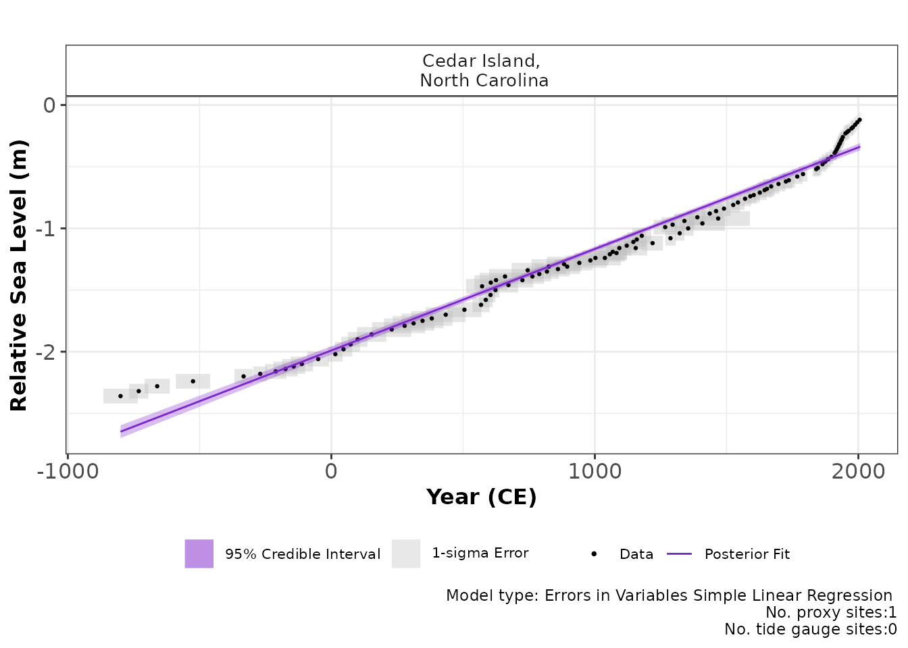
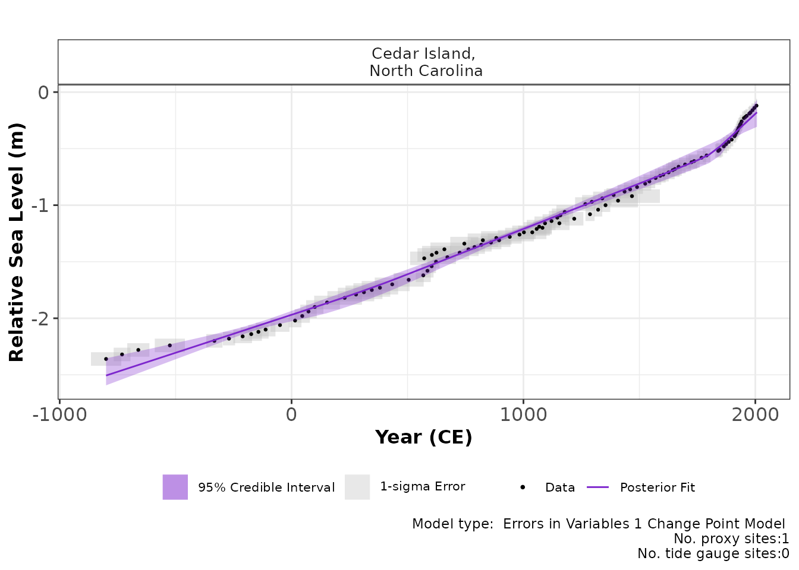

reslr: Statistical Models for examining Relative Sea Level Change in R
Maeve Upton, Andrew Parnell & Niamh Cahill
2023-06-12
Source:vignettes/reslr.Rmd
reslr.RmdIntroduction
If you require fast instructions, check out the reslr: Quick start.
The reslr package is specifically developed for Bayesian
modeling of relative sea-level data. It offers a diverse selection of
statistical models, including linear regression, change-point
regression, integrated Gaussian process regression, splines, and
generalized additive models. One notable feature is the incorporation of
measurement uncertainty in multiple dimensions, which is crucial when
analyzing relative sea-level data. The package provides a unified
framework for data loading, model fitting, and summarising changes in
relative sea level (RSL) over time and space. The generated plots depict
sea level curves and corresponding rates of change, taking into account
the associated uncertainty.
There are a number of modelling options available to the user:
| Statistical Model | Model Information |
model_type code |
|---|---|---|
| Errors in variables simple linear regression | A straight line of best fit taking account of any age and measurement errors in the RSL values using the method of Cahill et al (2015) | “eiv_slr_t” |
| Errors in variables change point model | An extension of the linear regression modelling process. It uses piece-wise linear sections and estimates where/when trend changes occur in the data (Cahill et al. 2015). | “eiv_cp_t” |
| Errors in variables integrated Gaussian Process | A non linear fit that utilities a Gaussian process prior on the rate of sea-level change that is then integrated (Cahill et al. 2015). | “eiv_igp_t” |
| Noisy Input spline in time | A non-linear fit using regression splines using the method of Upton et al (2023). | “ni_spline_t” |
| Noisy Input spline in space and time | A non-linear fit for a set of sites across a region using the method of Upton et al (2023). | “ni_spline_st” |
| Noisy Input Generalised Additive model for the decomposition of the RSL signal | A non-linear fit for a set of sites across a region and provides a decomposition of the signal into regional, local-linear (commonly GIA) and local non-linear components. Again this full model is as described in Upton et al (2023). | “ni_gam_decomp” |
For all of the above models the user is able to quantify and visualise changes of RSL and rates of change with associated uncertainties. Indeed a full posterior distribution ensemble of values is available in the output of the functions. For the decomposed full model, “ni_gam_decomp”, the user is able to access the posterior probability distributions of the individual components.
Installation of the reslr package
The reslr package uses the JAGS (Just Another Gibbs
Sampler) software to run the models. Before installing
reslr, visit the JAGS website and
download and install JAGS for your operating system.
Next, start Rstudio and find the window with the command prompt (the
symbol >). Type
# install.packages("reslr")
# library(devtools)
# devtools::install()
#devtools::install_github("maeveupton/reslr")
install_github("maeveupton/reslr")It may ask you to pick your nearest CRAN mirror (the nearest site
which hosts R packages). You will then see some activity on the screen
as the reslr package and the other packages it uses are
downloaded. The final line should then read:
package 'reslr' successfully unpacked and MD5 sums checked
You then need to load the package.
This will load the reslr package and all the associated
packages. You’ll need to type the library(reslr) command
every time you start R. If you have problems, visit the Issues page and
leave a message to tell us what went wrong.
Considerations before running reslr
Prior to running the reslr package, there are a few
points to consider.
Installating JAGS software
In this package, the models are written using Just Another Gibbs Sample (JAGS) which uses Gibbs sampling and Markov Chain Monte Carlo (MCMC) algorithm to draw samples from the posterior distribution of the unknown parameters. To download the JAGS package use this link.
Working with scripts
The best way to use the reslr package is by creating
scripts. A script can be created in Rstudio by clicking
File > New File > Rscript. This opens a text window
which allows commands to be typed in order and saved. The command can be
sent to the command prompt (which Rstudio calls the Console) by
highlighting the command and clicking Run (or going to Code > Run
Lines). There are also keyboard shortcuts to speed up the process. We
strongly recommend you learn to run R via scripts.
Inputting User’s data
reslr can handle three different types of data
structure. It is important to note that varying the number of data sites
will require different statistical modelling strategy:
- A single site. This may occur when you have data for only one individual data site. In the case of a single site, we recommend using a temporal model, for example EIV Integrated Gaussian Process or NI spline in time.
- Multiple sites. This may occur if you have a dataset which has multiple different data sites. In this situation, the user must use a spatial temporal model, for example NI spline in space time.
- Multiple group of sites with different drivers of change. This may occur if you have multiple locations are interested in investigating how the regional, linear local and non-linear local components vary. In this case, the NI GAM decomposition is recommended.
The user must ensure that the input data is a dataframe. For a single site or multiple sites only one dataframe should be given to the package, i.e. combined all sites into one dataframe, with the following columns names:
| Site | Region | Age | Age_err | RSL | RSL_err | Longitude | Latitude | linear_rate | linear_rate_err | |
|---|---|---|---|---|---|---|---|---|---|---|
| “Leeds Point” | “New Jersey” | 1000 | 8 | 0.5 | 0.01 | 39.5 | - 74.4 | 1.69 | 0.03 | |
| “Leeds Point” | “New Jersey” | 1050 | 11 | 0.6 | 0.01 | 39.5 | - 74.4 | 1.69 | 0.03 | |
| … | … | … | … | … | … | … | … | … | … | |
| … | … | … | … | … | … | … | … | … | … | |
| … | … | … | … | … | … | … | … | … | … | |
| “Cedar Island” | “North Carolina” | 1700 | 12 | 0.8 | 0.06 | -76.4 | 35 | 0.74 | 0.01 | |
| … | … | … | … | … | … | … | … | … | … | |
| … | … | … | … | … | … | … | … | … | … |
Site is the name of the site in question, e.g. Leeds Point.
Region is the area in which is was collected, e.g. New Jersey. To note, in the package, the Site and the Region columns will be combined to form a factor called the
SiteNamewhich results in an output, e.g. “Leeds Point,New Jersey”.Age is the year of the data in Common era (“CE”) or Before Present (“BP”). If calibrated in the BP form the package will convert the data into the Common Era form.
Age_err is the 1 standard deviation (\(\sigma\)) Age uncertainty associated with the Age.
RSL is the Relative Sea Level measured in meters.
RSL_err is the 1 standard deviation (\(\sigma\)) Relative Sea level uncertainty associated with the RSL measured in meters.
Longitude is the longitude of the site in degrees (in decimal, range: -180 to 180). It is important to note that if there are slightly different longitude values for all the observations in site this will lead to errors. Therefore, select one longitude value for each site.
Latitude is the Latitude of the site in degrees (degree in decimal, range -90 to 90). Similarly, it is important to note that if there are slightly different latitude values for all the observations in site this will lead to errors. Therefore, select one latitude value for each site.
Optional linear_rate is a column that contains the linear rate in mm per year associated with that site, arising from processes such as glacial isostatic adjustment (GIA). This is not a requirement. For the NI GAM decomposition model, the user has the option of using their own rate, otherwise the package will calculate it using the data. It is important to note that if the linear_rate is provided without the linear_rate_err column this will lead to issues, i.e. both columns need to be provided
Optional linear_rate_err is a column that contains associated uncertainty for the linear rate in mm per year. This is not a requirement. For the NI GAM decomposition model, the user has the option of using their value, otherwise the package will calculate it using the data. It is important to note that if the linear_rate_err is provided without the linear_rate column this will lead to issues, i.e. both columns need to be provided.
Tide Gauge Data
There is an option in the reslr package to include tide
gauge data as an additional source of data which we recommend when using
the model_type = "ni_gam_decomp". The package will extract
tide gauge data from the PSMSL website.
The data is downloaded from this website and stored in a temporary
directory.
The tide gauges undergo a number of processing steps within the package. Firstly, certain tide gauges have been flagged by the PSMSL website and we remove these locations. Secondly, the tide gauge data in the PSMSL database is given in millimetres relative to a revised local reference datum (a coordinate system which defines the zero level for sea level measurements (Pugh et al., 2014)). We transform the data by removing 7000 mm to revert the tide gauge data into the observed reference frame and convert the RSL to metres following the PSMSL guidance as described in Aarup et al. 2006 . Lastly, the tide gauge data is averaged over a decade to make it comparable with sedimentation rates associated proxy records sedimentation rates. The user can alter the size of the average if required when accumulation rates for the sediment in the proxy record is estimated to have a higher or lower accumulation rate, e.g. longer sediment accumulation rate result in a larger window average of 20 years.
Within the reslr_load function, the user has three
options to choose from:
Provide a list of the preferred tide gauges from the PSMSL website, ensuring spelling, capitalisation and spacing is exactly the same as the website. Note, the package will not work if error in spelling occurs. In addition, certain tide gauges have been flagged by the PSMSL website and are not included in this package and will return an error if selected. This is done by giving a list to the
list_preferred_TGs = c("ARGENTIA","MAYPORT")option in thereslr_mcmcfunctionThe nearest tide gauge to proxy site based on minimum distance in kilometers, which is done by setting
TG_minimum_dist_proxy = TRUE.Any tide gauge within 1 degree from the proxy site, which is done by setting
all_TG_1deg = TRUE.
The user can select a combination of option 1 and option 2 or option
1 and option 3 which allows for additional tide gauge data to be
included. The final output is a data frame which contains an additional
column, called data_type_id, identifying the data source
“ProxyRecord” or “TideGaugeData” depending on the observation in
question.
Glacial Isostatic Adjustment (GIA)
For the NI GAM decomposition, the statistical model requires an
estimate for the local linear rate arising from processes such as GIA
and associated uncertainty for this rate each site. According to
Whitehouse (2018), GIA represents the Earth’s reaction to the growth or
melting of ice sheets, including the gravitational field and ocean. GIA
can be approximated as a linear contribution over a short timescale, but
with variable effects along the coast (Engelhart et al., 2009).
Earth-ice models, which incorporate the physical structure of the Earth
to predict GIA changes due to ice loading and unloading, can provide
estimates of GIA rates. There are a range of Earth-ice models with one
such example being the ICE5G VM2-90 (Peltier, 2004). It should be noted
that other processes, such as tectonic vertical land motion, can mimic
the linear trend of GIA. Therefore, the linear local component within
the NI GAM decomposition may account for contributions from processes
other than GIA that drive changes in relative sea level. These are
included as additional columns, linear_rate and
linear_rate_err, in the input dataframe provided by the
user.
If the GIA rate for the proxy site is not provided then package will automatically calculate these rates using the data provided and we do not estimates the rates from any Earth-ice physical model. The user can source their own rate estimates as previously mentioned. Two examples of GIA rate sources (not limited to) include Prof. Peltier’s webpage and the associated publication (Peltier, 2004) or the Caron et al. 2018 publication and data.
Important to note, the tide gauge data require values for the
linear_rate and linear_rate_err columns. This
is calculated using ICE-5G (VM2 L90) Earth ice model (Peltier et
al. 2004) with an uncertainty value of 0.3 mm/year from Engelhart et
al. 2009.
Example Data Set
The reslr package possesses a large dataset used as an
example called NAACproxydata. This dataset contains proxy
records from the Atlantic coast of North America as used in Upton et al
2023 along with tide gauge data which will be discussed below. The 21
different proxy data sites and the references for each data source can
be found in the following table:
| Site Name | Reference |
|---|---|
| Barn Island, Connecticut | Donnelly et al (2004), Gehrels et al (2020) |
| Big River Marsh, Newfoundland | Kemp et al (2018) |
| Cape May Courthouse, New Jersey | Kemp et al (2013), Cahill et al (2016) |
| Cedar Island, North Carolina | Kemp et al (2011), Kemp et al (2017) |
| Cheesequake, New Jersey | Walker et al (2021) |
| Chezzetcook Inlet, Nova Scotia | Gehrels et al (2020) |
| East River Marsh, Connecticut | Kemp et al (2015), Stearns et al (2023) |
| Fox Hill Marsh, Rhode Island | Stearns et al (2023) |
| Leeds Point, New Jersey | Kemp et al (2013), Cahill et al (2016) |
| Les Sillons, Magdelen Islands | Barnett et al (2017) |
| Little Manatee River, Florida | Gerlach et al (2017) |
| Nassau, Florida | Kemp et al (2014) |
| Pelham Bay, New York | Kemp et al (2017), Stearns et al (2017) |
| Placentia, Newfoundland | Kemp et al (2018) |
| Revere, Massachusetts | Donnelly et al (2006) |
| Saint Simeon, Quebec | Barnett et al (2017) |
| Sanborn Cove, Maine | Gehrels et al (2020) |
| Sand Point, North Carolina | Kemp et al (2011), Kemp et al (2017) |
| Snipe Key, Florida | Khan et al (2022) |
| Swan Key, Florida | Khan et al (2022) |
| Wood Island, Massachusetts | Kemp et al (2011) |
The NAACproxydata is a data frame with 1715 rows and 8
columns which include:
- Region: All regions along Atlantic coast of North America
- Site: All sites along Atlantic coast of North America
- Latitude: Latitude of the data site
- Longitude: Longitude of the data site
- RSL: Relative Sea level in meters
- RSL_err: 1 standard deviation error associated with relative sea level measured in meters
- Age: Age in years common era (CE)
- Age_err: 1 standard deviation error associated with the Age in years CE
If you are interested in a specific site or multiple sites from the example dataset, then filter for that site prior to running the package, using the following method:
# For 1 site
data_1site <- reslr::NAACproxydata %>% dplyr::filter(Site == "Cedar Island")
# For multiple sites
data_multisite <- reslr::NAACproxydata %>% dplyr::filter(Site %in% c(
"Snipe Key", "Cheesequake",
"Placentia", "Leeds Point"
))How to run reslr
The general structure for running reslr is as
follows:
Step 1. Load in the data using
reslr_load. If tide gauge data is required update the
argument include_tide_gauge = TRUE, from this the user has
three options as described above. First, provide the list of names for
the tide gauges from PSMSL website that the wish to use in the
list_preferred_TGs option. Second, the package find the
tide gauge closest to the proxy site
TG_minimum_dist_proxy = TRUE. Third, the package uses all
tide gauges within 1 degree of the proxy site
all_TG_1deg = TRUE. If sedimentation accumulation rates for
the proxy records are less than or greater than a decade the user can
alter this size using sediment_average_TG = 10 which has a
default of 10 years. If linear_rate is of interest to the user update
the argument include_linear_rate = TRUE. The user can
select the resolution of the output by changing the value of
prediction_grid_res = 50 with the default of 50 years. The
input_age_type argument is associated with the type of
input age where the default is in Common Era. The package can model
Before Present by updating this setting to “BP” and more information is
in the advanced vignette.
Step 1a. The print function provides a
brief insight into the inputted data.
Step 2. Plot the raw data using plot
and select whether to include tide gauges in the output plot. The user
can update the title (plot_title) and axis labels
(xlab,ylab). The captions
(plot_captions) can be included on the plots which provides
a summary of the number of proxy sites and tide gauge sites.
Step 3. Choose your preferred model type from the
available list above and use the reslr_mcmc function to
obtain the parameter estimates and the dataframes required for plotting
the outputs. This function has a number of settings which allow the user
to improve model diagnostics. In addition, this function allows the user
to chose their preferred credible interval size, the default setting is
CI = 0.95.
Step 3a. The print function provides a
brief insight into the output of the reslr_mcmc
function.
Step 4. Check the model converged and examine the
results of the parameters with the summary function
Step 5. Visualise the results with plot
and access the dataframes used to create the plots. The
plot_type option allows users to print individual plots,
for example the model fits (“model_fit_plot”) and the rates
(“rate_plot”) separately. The captions (plot_captions) can
be included on the plots which provides a summary of the model type, the
number of proxy sites and tide gauge sites. The user can select to
include the tide gauge (plot_tide_gauges) in the output
plots.
Errors-in-Variables Simple Linear Regression (“eiv_slr_t”)
The simplest model the reslr package can fit is a simple
linear regression using the Errors-in-Variables method to account for
the uncertainty associated with the proxy records, i.e. uncertainty
associated with input (age) and the output (RSL). We would not recommend
any model simpler than this (e.g. lm) as it will ignore
some of the key uncertainties in the data.
This technique focuses on 1 site and is not recommended for multiple
proxy sites together. Tide gauge data can be included to gain insight
into recent changes in RSL, however, the user must investigate which
tide gauge is suitable. As an example, we will filter the example
dataset NAACproxydata to select one site to demonstrate the
process:
Step 1: Load in the data using the
reslr_load function:
CedarIslandNC_input <- reslr_load(
data = CedarIslandNC,
include_tide_gauge = FALSE,
include_linear_rate = FALSE,
TG_minimum_dist_proxy = FALSE,
list_preferred_TGs = NULL,
all_TG_1deg = FALSE,
prediction_grid_res = 50,
input_age_type = "CE",
sediment_average_TG = 10
)In this function, the user can select to add tide gauge data and
estimates for linear_rate, by changing
include_tide_gauge = TRUE and
include_linear_rate = TRUE respectfully. If
include_tide_gauge = TRUE the user must decide if they
require the closest tide gauge
i.e. TG_minimum_dist_proxy = TRUE, or select specific tide
gauge i.e. list_preferred_TGs = c("ARGENTIA"), or all tide
gauges within 1 degree of the proxy site
i.e. all_TG_1deg = TRUE. The default setting is
rolling_window_average = 10 which corresponds to sediment
accumulation rates of the proxy records, yet the user has the ability to
alter this sediment accumulation rate. Note that for a simple linear
regression we recommend using the default settings as demonstrated in
the above code chunk. The user can alter the resolution of the output
plots using prediction_grid_res with the default set at 50
years.
The output of this function is a list of two dataframes called
data and data_grid.
- The
datadataframe is the inputted data with additional columns for the linear_rate, linear_rate_err and data_type_id which will contain two options, “ProxyRecord” or “TideGaugeData”. It can be accessed by:
data <- CedarIslandNC_input$data- The
data_gridis a dataframe that is evenly spaced in time based on theprediction_grid_resvalue chosen by the user and is used to create the plots and is accessed by
data_grid <- CedarIslandNC_input$data_gridStep 1a: A brief insight into the outputs of the
reslr_input function can be obtained using:
print(CedarIslandNC_input)
#> This is a valid reslr input object with 104 observations and 1 site(s).
#> There are 1 proxy site(s) and 0 tide gauge site(s).
#> The age units are; Common Era.
#> Decadally averaged tide gauge data was not included. It is recommended for the ni_gam_decomp model
#> The linear_rate or linear_rate_err was not included. It is required for the ni_gam_decomp modelStep 2: Plotting the data the raw data with:
plot(
x = CedarIslandNC_input,
title = "Plot of the raw data",
xlab = "Year (CE)",
ylab = "Relative Sea Level (m)",
plot_tide_gauges = FALSE,
plot_proxy_records = TRUE,
plot_caption = TRUE
) This will produce a plot of Age on the x-axis and Relative Sea Level on
the y-axis in meters. Grey boxes represent the uncertainty associated
with the vertical and horizontal uncertainty. The black data points are
the midpoints of these uncertainty boxes. The following extra arguments
can be used which allows the user to updated the titles and axis labels.
The caption
This will produce a plot of Age on the x-axis and Relative Sea Level on
the y-axis in meters. Grey boxes represent the uncertainty associated
with the vertical and horizontal uncertainty. The black data points are
the midpoints of these uncertainty boxes. The following extra arguments
can be used which allows the user to updated the titles and axis labels.
The caption plot_caption, included by default, provides the
number of proxy sites and tide gauge sites that will be used in the
model and can be removed if required plot_caption = FALSE.
In addition, the user can select to plot the additional tide gauge data,
plot_tide_gauge = TRUE.
Step 3: To run the the model the following code is used:
res_eiv_slr_t <- reslr_mcmc(
input_data = CedarIslandNC_input,
model_type = "eiv_slr_t",
CI = 0.95
)
#> module glm loaded
#> Compiling model graph
#> Resolving undeclared variables
#> Allocating nodes
#> Graph information:
#> Observed stochastic nodes: 208
#> Unobserved stochastic nodes: 107
#> Total graph size: 997
#>
#> Initializing modelThis command takes the input data and the user specifies the
statistical model, i.e. a simple linear regression using the EIV
uncertainty method (“eiv_slr_t”). The CI setting allows the
user to set the credible intervals, the current default is
CI = 0.95. The function tells reslr to store
the output of the model run in an object called
res_eiv_slr_t.
Step 3a: A brief insight into the outputs of the
reslr_output function can be obtained using:
print(res_eiv_slr_t)
#> This is a valid reslr output object with 104 observations and 1 site(s).
#> There are 1 proxy site(s) and 0 tide gauge site(s).
#> The age units are; Common Era.
#> The model used was the Errors-in-Variables Simple Linear Regression model.
#> The input data has been run via reslr_mcmc and has produced 3000 iterations over 3 MCMC chains.Step 4: The convergence of the algorithm is examined and he parameter estimates from the model can be investigated using the following:
summary(res_eiv_slr_t)
#> No convergence issues detected.
#> # A tibble: 3 × 7
#> variable mean sd mad q5 q95 rhat
#> <chr> <num> <num> <num> <num> <num> <num>
#> 1 alpha -1.99 0.0172 0.0174 -2.02 -1.96 1.00
#> 2 beta 0.823 0.0131 0.0131 0.802 0.845 1.00
#> 3 sigma_y 0.0667 0.00963 0.00946 0.0509 0.0826 1.00If the model run has the package will print: “No convergence issues
detected”. If the package prints: “Convergence issues detected, a longer
run is necessary”. The user is required to update the
reslr_mcmc function with additional iterations in the
following manner:
res_eiv_slr_t <- reslr_mcmc(
input_data = CedarIslandNC_input,
model_type = "eiv_slr_t",
# Update these values
n_iterations = 6000, # Number of iterations
n_burnin = 1000, # Number of iterations to discard at the beginning
n_thin = 4, # Reduces number of output samples to save memory and computation time
n_chains = 3 # Number of Markov chains
)The output of this function allows to user to examine the parameter estimates. For the eiv_slr_t model, the parameters of interest are the intercept (“alpha”), the slope (“beta”) and the residual standard deviation of the model (“sigma_y”). When using the eiv_slr_t model, an estimate of the of the rate of sea-level change can be obtained by examining the value of the slope, i.e. “beta”.
Step 5: The results from the eiv_slr_t model can be visualised using the following function:
plot(res_eiv_slr_t,
xlab = "Year (CE)",
ylab = "Relative Sea Level (m)"
)
The output of this function is a graph of the input data, i.e. Age and
RSL and associated uncertainty boxes, and the model fit with 95 %
credible interval. The caption provides the model type used and number
of proxy sites and tide gauge sites used and can be removed if necessary
with plot_caption = FALSE.
To examine the data creating these plots the user types the following:
output_dataframes <- res_eiv_slr_t$output_dataframes
head(output_dataframes)
#> Longitude Latitude SiteName data_type_id Age
#> 1 -76.38 34.971 Cedar Island,\n North Carolina ProxyRecord -734.75
#> 2 -76.38 34.971 Cedar Island,\n North Carolina ProxyRecord -650.00
#> 3 -76.38 34.971 Cedar Island,\n North Carolina ProxyRecord -600.00
#> 4 -76.38 34.971 Cedar Island,\n North Carolina ProxyRecord -550.00
#> 5 -76.38 34.971 Cedar Island,\n North Carolina ProxyRecord -500.00
#> 6 -76.38 34.971 Cedar Island,\n North Carolina ProxyRecord -450.00
#> pred upr lwr CI
#> 1 -2.595106 -2.645416 -2.545336 95%
#> 2 -2.525323 -2.573514 -2.477192 95%
#> 3 -2.484152 -2.531095 -2.437165 95%
#> 4 -2.442982 -2.488677 -2.397202 95%
#> 5 -2.401812 -2.446303 -2.357156 95%
#> 6 -2.360642 -2.403982 -2.317151 95%Errors-in-Variable Change Point Model (“eiv_cp_t”)
The Errors-in-Variable Change Point model is an extension of the linear regression and allows the user to specify the number of change points required.
This technique focuses on 1 site and the maximum number of change points available to the user is 3. We do not recommended for multiple proxy sites together. Tide gauge data can be included to gain insight into recent changes in RSL, however, the user must investigate which tide gauge is most suitable. It is important to note that certain data sites will not work with 2 or 3 change points as there is no distinct changing points in the data. In this case, we recommend testing different number of change points and reviewing the resulting plots to confirm the correct number of change points is selected.
As an example, we will filter the example dataset
NAACproxydata to select one site to demonstrate the
process:
# For 1 site
CedarIslandNC <- reslr::NAACproxydata %>% dplyr::filter(Site == "Cedar Island")Step 1: Load in the data using the
reslr_load function:
CedarIslandNC_input <- reslr_load(
data = CedarIslandNC,
include_tide_gauge = FALSE,
include_linear_rate = FALSE,
TG_minimum_dist_proxy = FALSE,
list_preferred_TGs = NULL,
all_TG_1deg = FALSE,
prediction_grid_res = 50,
sediment_average_TG = 10
)In this function, the user can select to add tide gauge data and
estimates for linear_rate, by changing
include_tide_gauge = TRUE and
include_linear_rate = TRUE respectfully. If
include_tide_gauge = TRUE the user must decide if they
require the closest tide gauge
i.e. TG_minimum_dist_proxy = TRUE, or select specific tide
gauge i.e. list_preferred_TGs = c("ARGENTIA"), or all tide
gauges within 1 degree of the proxy site
i.e. all_TG_1deg = TRUE. The default setting is
sediment_average_TG = 10 which corresponds to sediment
accumulation rates of the proxy records, yet the user has the ability to
alter this sediment accumulation rate by changing the size of the
rolling window average.
Note that for a change point model, we recommend using the default
settings as demonstrated in the above code chunk. The user can alter the
resolution of the output plots using prediction_grid_res
with the default set at 50 years. The output of this function is a list
of two dataframes called data and data_grid. -
The data dataframe is the inputted data with additional
column for the data_type_id which will contain, “ProxyRecord”. It can be
accessed by:
data <- CedarIslandNC_input$data
head(data)
#> Region Site Latitude Longitude RSL Age Age_err RSL_err
#> 1 North Carolina Cedar Island 34.971 -76.38 -0.12 2005 2.25 0.06
#> 2 North Carolina Cedar Island 34.971 -76.38 -0.14 1996 2.00 0.06
#> 3 North Carolina Cedar Island 34.971 -76.38 -0.16 1988 5.00 0.06
#> 4 North Carolina Cedar Island 34.971 -76.38 -0.18 1979 5.75 0.06
#> 5 North Carolina Cedar Island 34.971 -76.38 -0.19 1974 5.50 0.06
#> 6 North Carolina Cedar Island 34.971 -76.38 -0.21 1963 5.50 0.06
#> SiteName data_type_id
#> 1 Cedar Island,\n North Carolina ProxyRecord
#> 2 Cedar Island,\n North Carolina ProxyRecord
#> 3 Cedar Island,\n North Carolina ProxyRecord
#> 4 Cedar Island,\n North Carolina ProxyRecord
#> 5 Cedar Island,\n North Carolina ProxyRecord
#> 6 Cedar Island,\n North Carolina ProxyRecord- The
data_gridis a dataframe that is evenly spaced in time based on theprediction_grid_resvalue chosen by the user and is used to create the plots and is accessed by
data_grid <- CedarIslandNC_input$data_grid
head(data_grid)
#> # A tibble: 6 × 5
#> # Groups: SiteName [1]
#> Longitude Latitude SiteName data_type_id Age
#> <dbl> <dbl> <fct> <fct> <dbl>
#> 1 -76.4 35.0 "Cedar Island,\n North Carolina" ProxyRecord -735.
#> 2 -76.4 35.0 "Cedar Island,\n North Carolina" ProxyRecord -650
#> 3 -76.4 35.0 "Cedar Island,\n North Carolina" ProxyRecord -600
#> 4 -76.4 35.0 "Cedar Island,\n North Carolina" ProxyRecord -550
#> 5 -76.4 35.0 "Cedar Island,\n North Carolina" ProxyRecord -500
#> 6 -76.4 35.0 "Cedar Island,\n North Carolina" ProxyRecord -450Step 1a: A brief insight into the outputs of the
reslr_input function can be obtained using:
print(CedarIslandNC_input)
#> This is a valid reslr input object with 104 observations and 1 site(s).
#> There are 1 proxy site(s) and 0 tide gauge site(s).
#> The age units are; Common Era.
#> Decadally averaged tide gauge data was not included. It is recommended for the ni_gam_decomp model
#> The linear_rate or linear_rate_err was not included. It is required for the ni_gam_decomp modelStep 2: Plotting the data the raw data with:
plot(
x = CedarIslandNC_input,
title = "Plot of the raw data",
xlab = "Year (CE)",
ylab = "Relative Sea Level (m)",
plot_proxy_records = TRUE,
plot_tide_gauges = FALSE
) This will produce a plot of Age on the x-axis and Relative Sea Level on
the y-axis in meters. Grey boxes represent the uncertainty associated
with the vertical and horizontal uncertainty. The black data points are
the midpoints of these uncertainty boxes. The extra arguments can be
used which allows the user to updated the titles and axis labels. The
caption
This will produce a plot of Age on the x-axis and Relative Sea Level on
the y-axis in meters. Grey boxes represent the uncertainty associated
with the vertical and horizontal uncertainty. The black data points are
the midpoints of these uncertainty boxes. The extra arguments can be
used which allows the user to updated the titles and axis labels. The
caption plot_caption, included by default, provides the
number of proxy sites and tide gauge sites that will be used in the
model and can be removed if required plot_caption = FALSE.
The user can select to plot the additional tide gauge data,
plot_tide_gauge = TRUE.
Step 3: Run the model using the following code and select the number of change points you require:
res_eiv_cp1_t <- reslr_mcmc(
input_data = CedarIslandNC_input,
model_type = "eiv_cp_t",
n_cp = 1,
CI = 0.95
)
#> Compiling model graph
#> Resolving undeclared variables
#> Allocating nodes
#> Graph information:
#> Observed stochastic nodes: 208
#> Unobserved stochastic nodes: 109
#> Total graph size: 1637
#>
#> Initializing modelIf the user is interested in running 2 change points use method:
res_eiv_cp2_t <- reslr_mcmc(
input_data = CedarIslandNC_input,
model_type = "eiv_cp_t",
n_cp = 2, # Updating the default setting to include an additional change point.
CI = 0.95
)The CI setting allows the user to set the credible
intervals, the current default is CI = 0.95. Similar to the
earlier model, the output object res_eiv_cp1_t stores the
JAGS model run and should take a second to run.
Step 3a: A brief insight into the outputs of the
reslr_output function can be obtained using:
print(res_eiv_cp1_t)
#> This is a valid reslr output object with 104 observations and 1 site(s).
#> There are 1 proxy site(s) and 0 tide gauge site(s).
#> The age units are; Common Era.
#> The model used was the Errors-in-Variables Change Point model with 1 change point.
#> The input data has been run via reslr_mcmc and has produced 3000 iterations over 3 MCMC chains.Step 4: The convergence of the algorithm is examined and the parameter estimates from the model can be investigated using the following:
summary(res_eiv_cp1_t)
#> No convergence issues detected.
#> # A tibble: 5 × 7
#> variable mean sd mad q5 q95 rhat
#> <chr> <num> <num> <num> <num> <num> <num>
#> 1 alpha -1.03 0.591 0.0865 -2.06 -0.564 1.00
#> 2 beta[1] 0.659 0.138 0.0274 0.367 0.765 1.00
#> 3 beta[2] 1.89 0.780 0.895 0.886 2.96 1.00
#> 4 Change Point in CE: 1287 0.721 0.0819 0.0286 1.84 1.00
#> 5 sigma_y 0.0154 0.0136 0.0109 0.000895 0.0424 1.00If the model run has the package will print: “No convergence issues
detected”. If the package prints: “Convergence issues detected, a longer
run is necessary”. The user is required to update the
reslr_mcmc function with additional iterations in the
following manner:
res_eiv_cp1_t <- reslr_mcmc(
input_data = CedarIslandNC_input,
model_type = "eiv_cp_t",
# Update these values
n_iterations = 6000, # Number of iterations
n_burnin = 1000, # Number of iterations to discard at the beginning
n_thin = 4, # Reduces number of output samples to save memory and computation time
n_chains = 3 # Number of Markov chains
)For the eiv_cp_t model, the parameters of interest are the intercept (alpha), the slopes before the change point (“beta[1]”) and after the change point (“beta[2]”), the year of the change point (Change Point) and “sigma_y” the variance of the model.
Step 5: The results from the EIV Change Point model can be illustrated using:
plot(res_eiv_cp1_t,
xlab = "Year (CE)",
ylab = "Relative Sea Level (m)",
)
The output of this function is a graph of the input data, i.e. Age and
RSL and associated uncertainty boxes, and the model fit with 95 %
credible interval. The caption provides the model type used and number
of proxy sites and tide gauge sites used and can be removed if necessary
with plot_caption = FALSE.
To examine the data creating these plots the user types the following:
output_dataframes <- res_eiv_cp1_t$output_dataframes
head(output_dataframes)
#> Longitude Latitude SiteName data_type_id Age
#> 1 -76.38 34.971 Cedar Island,\n North Carolina ProxyRecord -734.75
#> 2 -76.38 34.971 Cedar Island,\n North Carolina ProxyRecord -650.00
#> 3 -76.38 34.971 Cedar Island,\n North Carolina ProxyRecord -600.00
#> 4 -76.38 34.971 Cedar Island,\n North Carolina ProxyRecord -550.00
#> 5 -76.38 34.971 Cedar Island,\n North Carolina ProxyRecord -500.00
#> 6 -76.38 34.971 Cedar Island,\n North Carolina ProxyRecord -450.00
#> pred upr lwr CI
#> 1 -2.458808 -2.542270 -2.300947 95%
#> 2 -2.402927 -2.477268 -2.272236 95%
#> 3 -2.369960 -2.438845 -2.255046 95%
#> 4 -2.336992 -2.400395 -2.235837 95%
#> 5 -2.304024 -2.361986 -2.216076 95%
#> 6 -2.271056 -2.323434 -2.194853 95%Errors-in-Variable Integrated Gaussian Process Model (“eiv_igp_t”)
The EIV Integrated Gaussian Process model provides the underlying rate of the process directly from the model. Further reading on this modeling approach can be found here.
This technique focuses on 1 site and we do not recommended for
multiple proxy sites together. Tide gauge data can be included to gain
insight into recent changes in RSL, however, the user must investigate
which tide gauge is suitable. As an example, we will filter the example
dataset NAACproxydata to select one site to demonstrate the
process:
# For 1 site
CedarIslandNC <- reslr::NAACproxydata %>% dplyr::filter(Site == "Cedar Island")Step 1: Load in the data using the
reslr_load function:
CedarIslandNC_input <- reslr_load(
data = CedarIslandNC,
include_tide_gauge = FALSE,
include_linear_rate = FALSE,
TG_minimum_dist_proxy = FALSE,
list_preferred_TGs = NULL,
all_TG_1deg = FALSE,
prediction_grid_res = 50,
sediment_average_TG = 10
)In this function, the user can select to add tide gauge data and
estimates for linear_rate, by changing
include_tide_gauge = TRUE and
include_linear_rate = TRUE respectfully. If
include_tide_gauge = TRUE the user must decide if they
require the closest tide gauge
i.e. TG_minimum_dist_proxy = TRUE, or select specific tide
gauge i.e. list_preferred_TGs = c("ARGENTIA"), or all tide
gauges within 1 degree of the proxy site
i.e. all_TG_1deg = TRUE. The default setting is
sediment_average_TG = 10 which corresponds to sediment
accumulation rates of the proxy records, yet the user has the ability to
alter this sediment accumulation rate.
Note that for an IGP we recommend using the default settings as
demonstrated in the above code chunk. The user can alter the resolution
of the output plots using prediction_grid_res with the
default set at 50 years. The output of this function is a list of two
dataframes called data and data_grid. - The
data dataframe is the inputted data with additional columns
for the data_type_id which will contain “ProxyRecord”. It can be
accessed by:
data <- CedarIslandNC_input$data- The
data_gridis a dataframe that is evenly spaced in time based on theprediction_grid_resvalue chosen by the user and is used to create the plots and is accessed by
data_grid <- CedarIslandNC_input$data_gridStep 1a: A brief insight into the outputs of the
reslr_input function can be obtained using:
print(CedarIslandNC_input)
#> This is a valid reslr input object with 104 observations and 1 site(s).
#> There are 1 proxy site(s) and 0 tide gauge site(s).
#> The age units are; Common Era.
#> Decadally averaged tide gauge data was not included. It is recommended for the ni_gam_decomp model
#> The linear_rate or linear_rate_err was not included. It is required for the ni_gam_decomp modelStep 2: Plotting the data the raw data with:
plot(
x = CedarIslandNC_input,
title = "Plot of the raw data",
xlab = "Year (CE)",
ylab = "Relative Sea Level (m)",
plot_proxy_records = TRUE,
plot_tide_gauges = FALSE
)
This will produce a plot of Age on the x-axis and Relative Sea Level on
the y-axis in meters. Grey boxes represent the uncertainty associated
with the vertical and horizontal uncertainty. The black data points are
the midpoints of these uncertainty boxes. The extra arguments can be
used which allows the user to updated the titles and axis labels. The
caption plot_caption, included by default, provides the
number of proxy sites and tide gauge sites that will be used in the
model and can be removed if required plot_caption = FALSE.
In addition, the user can select to plot the additional tide gauge data,
plot_tide_gauge = TRUE.
Step 3: To run the eiv_igp_t model the following function should be used:
res_eiv_igp_t <- reslr_mcmc(
input_data = CedarIslandNC_input,
model_type = "eiv_igp_t",
CI = 0.95,
)This command takes the input data and the user specifies the
statistical model, i.e. an integrated Gaussian process using the EIV
uncertainty method (“eiv_slr_t”). It tells reslr to store
the output of the model run in an object called
res_eiv_igp_t. The CI setting allows the user
to set the credible intervals, the current default is
CI = 0.95. The computational run time for this model is
approximately 14 minutes.
Step 3a: A brief insight into the outputs of the
reslr_output function can be obtained using:
print(res_eiv_igp_t)Step 4: The convergence of the algorithm is examined and he parameter estimates from the model can be investigated using the following:
summary(res_eiv_igp_t)If the model run has the package will print: “No convergence issues
detected”. If the package prints: “Convergence issues detected, a longer
run is necessary”. The user is required to update the
reslr_mcmc function with additional iterations in the
following manner:
res_eiv_igp_t <- reslr_mcmc(
input_data = CedarIslandNC_input,
model_type = "eiv_igp_t",
# Update these values
n_iterations = 6000, # Number of iterations
n_burnin = 1000, # Number of iterations to discard at the beginning
n_thin = 4, # Reduces number of output samples to save memory and computation time
n_chains = 3 # Number of Markov chains
)For the parameter estimates, the length scale parameter, “rho” is the correlation parameter and “nu” is the standard deviation of the rate process. “sigma_y” is the variation of the model.
Step 5: The results from the EIV IGP model can be illustrated using:
plot(res_eiv_igp_t,
plot_type = "model_fit_plot",
xlab = "Year (CE)",
ylab = "Relative Sea Level (m)",
plot_proxy_records = TRUE,
plot_tide_gauges = FALSE
) The output of this function is a graph of the input data, i.e. Age and
RSL and associated uncertainty boxes, and the model fit with 95 %
credible interval. The caption provides the model type used and number
of proxy sites and tide gauge sites used and can be removed if necessary
with
The output of this function is a graph of the input data, i.e. Age and
RSL and associated uncertainty boxes, and the model fit with 95 %
credible interval. The caption provides the model type used and number
of proxy sites and tide gauge sites used and can be removed if necessary
with plot_caption = FALSE. In order to view the rate of
change plot, the following setting should be used:
plot(res_eiv_igp_t,
plot_type = "rate_plot",
xlab = "Year (CE)",
y_rate_lab = "Rate of Change (mm per year)"
) This prints the plot of the rate of change with 95 % credible intervals.
The caption provides the model type, the number of proxy sites and tide
gauge sites that were used.
This prints the plot of the rate of change with 95 % credible intervals.
The caption provides the model type, the number of proxy sites and tide
gauge sites that were used.
To examine the data creating these plots the user types the following:
output_dataframes <- res_eiv_igp_t$output_dataframesNoisy input spline in time (“ni_spline_t”)
An alternative method to examine how the response variable varies in time is using the Noisy input spline in time (ni_spline_t). It model can obtain results in more efficient computational run times when compared with the eiv_igp_t model.
This technique focuses on 1 site and we do not recommended for
multiple proxy sites together. Tide gauge data can be used to gain
insight into recent RSL changes. As an example, we will filter the
example dataset NAACproxydata to select one site to
demonstrate the process:
# For 1 site
CedarIslandNC <- reslr::NAACproxydata %>% dplyr::filter(Site == "Cedar Island")Step 1: Load in the data using the
reslr_load function:
CedarIslandNC_input <- reslr_load(
data = CedarIslandNC,
include_tide_gauge = FALSE,
include_linear_rate = FALSE,
TG_minimum_dist_proxy = FALSE,
list_preferred_TGs = NULL,
all_TG_1deg = FALSE,
prediction_grid_res = 50,
sediment_average_TG = 10
)In this function, the user can select to add tide gauge data and
estimates for linear_rate, by changing
include_tide_gauge = TRUE and
include_linear_rate = TRUE respectfully. If
include_tide_gauge = TRUE the user must decide if they
require the closest tide gauge
i.e. TG_minimum_dist_proxy = TRUE, or select specific tide
gauge i.e. list_preferred_TGs = c("ARGENTIA"), or all tide
gauges within 1 degree of the proxy site
i.e. all_TG_1deg = TRUE. The default setting is
sediment_average_TG = 10 which corresponds to sediment
accumulation rates of the proxy records, yet the user has the ability to
alter this sediment accumulation rate by changing the size of the
rolling window average.
Note that for a spline in time, we recommend using the default
settings as demonstrated in the above code chunk. The user can alter the
resolution of the output plots using prediction_grid_res
with the default set at 50 years. The output of this function is a list
of two dataframes called data and data_grid. -
The data dataframe is the inputted data with additional
columns for the data_type_id which will contain “ProxyRecord”. It can be
accessed by:
data <- CedarIslandNC_input$data- The
data_gridis a dataframe that is evenly spaced in time based on theprediction_grid_resvalue chosen by the user and is used to create the plots and is accessed by
data_grid <- CedarIslandNC_input$data_gridStep 1a: A brief insight into the outputs of the
reslr_input function can be obtained using:
print(CedarIslandNC_input)
#> This is a valid reslr input object with 104 observations and 1 site(s).
#> There are 1 proxy site(s) and 0 tide gauge site(s).
#> The age units are; Common Era.
#> Decadally averaged tide gauge data was not included. It is recommended for the ni_gam_decomp model
#> The linear_rate or linear_rate_err was not included. It is required for the ni_gam_decomp modelStep 2: Plotting the data the raw data with:
plot(
x = CedarIslandNC_input,
title = "Plot of the raw data",
xlab = "Year (CE)",
ylab = "Relative Sea Level (m)",
plot_proxy_records = TRUE,
plot_tide_gauges = FALSE
) This will produce a plot of Age on the x-axis and Relative Sea Level on
the y-axis in meters. Grey boxes represent the uncertainty associated
with the vertical and horizontal uncertainty. The black data points are
the midpoints of these uncertainty boxes. The following extra arguments
can be used which allows the user to updated the titles and axis labels.
The caption
This will produce a plot of Age on the x-axis and Relative Sea Level on
the y-axis in meters. Grey boxes represent the uncertainty associated
with the vertical and horizontal uncertainty. The black data points are
the midpoints of these uncertainty boxes. The following extra arguments
can be used which allows the user to updated the titles and axis labels.
The caption plot_caption, included by default, provides the
number of proxy sites and tide gauge sites that will be used in the
model and can be removed if required plot_caption = FALSE.
In addition, the user can select to plot the additional tide gauge data,
plot_tide_gauge = TRUE.
Step 3: To run this model type use the following:
res_ni_spline_t <- reslr_mcmc(
input_data = CedarIslandNC_input,
model_type = "ni_spline_t",
CI = 0.95
)The output object res_ni_spline_t stores the JAGS model
run. The CI setting allows the user to set the credible
intervals, the current default is CI = 0.95. Note that
there will be two model runs printed in the console here but the output
will be the same format as earlier models.
Step 3a: A brief insight into the outputs of the
reslr_output function can be obtained using:
print(res_ni_spline_t)
#> This is a valid reslr output object with 104 observations and 1 site(s).
#> There are 1 proxy site(s) and 0 tide gauge site(s).
#> The age units are; Common Era.
#> The model used was the Noisy Input Spline in time model.
#> The input data has been run via reslr_mcmc and has produced 3000 iterations over 3 MCMC chains.Step 4: The convergence of the algorithm is examined and he parameter estimates from the model can be investigated using the following:
summary(res_ni_spline_t)
#> No convergence issues detected.
#> # A tibble: 2 × 7
#> variable mean sd mad q5 q95 rhat
#> <chr> <num> <num> <num> <num> <num> <num>
#> 1 sigma_beta 2.09 0.696 0.528 1.27 3.33 1.00
#> 2 sigma_y 0.00610 0.00480 0.00446 0.000393 0.0154 1.00If the model run has the package will print: “No convergence issues
detected”. If the package prints: “Convergence issues detected, a longer
run is necessary”. The user is required to update the
reslr_mcmc function with additional iterations in the
following manner:
res_ni_spline_t <- reslr_mcmc(
input_data = CedarIslandNC,
model_type = "ni_spline_t",
# Update these values
n_iterations = 6000, # Number of iterations
n_burnin = 1000, # Number of iterations to discard at the beginning
n_thin = 4, # Reduces number of output samples to save memory and computation time
n_chains = 3 # Number of Markov chains
)For the parameter estimates, we can present the standard deviation associated with the NI spline time model. Where “sigma_beta” highlights the variation associated with the spline coefficient for the spline in time and “sigma_y” presenting the overall variation of the model.
Step 5: the results from the ni_spline_t model can be illustrated using:
plot(res_ni_spline_t,
plot_type = "model_fit_plot",
xlab = "Year (CE)",
ylab = "Relative Sea Level (m)"
)
The output of this function is a graph of the input data, i.e. Age and
RSL and associated uncertainty boxes, and the model fit with 95 %
credible interval. The caption provides the model type used and number
of proxy sites and tide gauge sites used and can be removed if necessary
with plot_caption = FALSE. In order to view the rate of
change plot, the following setting should be used:
plot(res_ni_spline_t,
plot_type = "rate_plot",
xlab = "Year (CE)",
y_rate_lab = "Rate of Change (mm per year)"
)This prints the plot of the rate of change with 95 % credible intervals. Again, the caption provides the model type, number of proxy sites and tide gauge sites that were used.
To examine the data creating these plots the user types the following:
output_dataframes <- res_ni_spline_t$output_dataframes
head(output_dataframes)
#> Longitude Latitude SiteName data_type_id Age
#> 1 -76.38 34.971 Cedar Island,\n North Carolina ProxyRecord -734.75
#> 2 -76.38 34.971 Cedar Island,\n North Carolina ProxyRecord -650.00
#> 3 -76.38 34.971 Cedar Island,\n North Carolina ProxyRecord -600.00
#> 4 -76.38 34.971 Cedar Island,\n North Carolina ProxyRecord -550.00
#> 5 -76.38 34.971 Cedar Island,\n North Carolina ProxyRecord -500.00
#> 6 -76.38 34.971 Cedar Island,\n North Carolina ProxyRecord -450.00
#> pred upr lwr rate_pred rate_upr rate_lwr CI
#> 1 -2.318161 -2.381749 -2.250520 -0.02742948 -0.43017297 0.3886927 95%
#> 2 -2.314766 -2.366141 -2.261277 0.10560349 -0.18593984 0.4002811 95%
#> 3 -2.307644 -2.358049 -2.257750 0.17860457 -0.05675855 0.4164699 95%
#> 4 -2.296973 -2.345985 -2.246936 0.24753558 0.05639483 0.4318950 95%
#> 5 -2.282958 -2.331777 -2.231703 0.31239650 0.16012718 0.4540374 95%
#> 6 -2.265802 -2.314405 -2.215494 0.37318733 0.25349791 0.4834276 95%Noisy input spline in space time (“ni_spline_st”)
The Noisy input spline in space time examines changes in RSL over
multiple locations and throughout time. For this model, a minimum of 2
proxy sites should be used and tide gauge data provides insight into
recent changes in RSL if the user is requires_ As an example, we will
filter the example dataset NAACproxydata to select two
sites to demonstrate the process:
# For 2 site
multi_site <- reslr::NAACproxydata %>%
dplyr::filter(Site %in% c("Cedar Island", "Nassau"))Step 1: Load in the data using the
reslr_load function:
multi_site_input <- reslr_load(
data = multi_site,
include_tide_gauge = FALSE,
include_linear_rate = FALSE,
TG_minimum_dist_proxy = FALSE,
list_preferred_TGs = NULL,
all_TG_1deg = FALSE,
prediction_grid_res = 50,
sediment_average_TG = 10
)In this function, the user can select to add tide gauge data and
estimates for linear_rate, by changing
include_tide_gauge = TRUE and
include_linear_rate = TRUE respectfully. If
include_tide_gauge = TRUE the user must decide if they
require the closest tide gauge
i.e. TG_minimum_dist_proxy = TRUE, or select specific tide
gauge i.e. list_preferred_TGs = c("ARGENTIA"), or all tide
gauges within 1 degree of the proxy site
i.e. all_TG_1deg = TRUE. The default setting is
rolling_window_average = 10 which corresponds to sediment
accumulation rates of the proxy records, yet the user has the ability to
alter this sediment accumulation rate.
Note that for a spline in space time, we recommend using the default
settings as demonstrated in the above code chunk or investigating the
resulting plots if additional tide gauge data could provide insight into
recent changes. The user can alter the resolution of the output plots
using prediction_grid_res with the default set at 50 years.
The output of this function is a list of two dataframes called
data and data_grid. - The data
dataframe is the inputted data with additional columns for the
linear_rate, linear_rate_err and data_type_id which will contain two
options, “ProxyRecord” or “TideGaugeData”. It can be accessed by:
data <- multi_site_input$data
head(data)
#> Region Site Latitude Longitude RSL Age Age_err RSL_err
#> 1 Florida Nassau 30.587 -81.666 0.05 2002 4.25 0.07
#> 2 Florida Nassau 30.587 -81.666 0.03 1990 5.50 0.07
#> 3 Florida Nassau 30.587 -81.666 0.01 1980 4.25 0.07
#> 4 Florida Nassau 30.587 -81.666 -0.01 1974 4.50 0.07
#> 5 Florida Nassau 30.587 -81.666 -0.03 1964 9.50 0.07
#> 6 Florida Nassau 30.587 -81.666 -0.05 1936 10.75 0.07
#> SiteName data_type_id
#> 1 Nassau,\n Florida ProxyRecord
#> 2 Nassau,\n Florida ProxyRecord
#> 3 Nassau,\n Florida ProxyRecord
#> 4 Nassau,\n Florida ProxyRecord
#> 5 Nassau,\n Florida ProxyRecord
#> 6 Nassau,\n Florida ProxyRecord- The
data_gridis a dataframe that is evenly spaced in time based on theprediction_grid_resvalue chosen by the user and is used to create the plots and is accessed by
data_grid <- multi_site_input$data_grid
head(data_grid)
#> # A tibble: 6 × 5
#> # Groups: SiteName [1]
#> Longitude Latitude SiteName data_type_id Age
#> <dbl> <dbl> <fct> <fct> <dbl>
#> 1 -76.4 35.0 "Cedar Island,\n North Carolina" ProxyRecord -735.
#> 2 -76.4 35.0 "Cedar Island,\n North Carolina" ProxyRecord -650
#> 3 -76.4 35.0 "Cedar Island,\n North Carolina" ProxyRecord -600
#> 4 -76.4 35.0 "Cedar Island,\n North Carolina" ProxyRecord -550
#> 5 -76.4 35.0 "Cedar Island,\n North Carolina" ProxyRecord -500
#> 6 -76.4 35.0 "Cedar Island,\n North Carolina" ProxyRecord -450Step 1a: A brief insight into the outputs of the
reslr_input function can be obtained using:
print(multi_site_input)
#> This is a valid reslr input object with 169 observations and 2 site(s).
#> There are 2 proxy site(s) and 0 tide gauge site(s).
#> The age units are; Common Era.
#> Decadally averaged tide gauge data was not included. It is recommended for the ni_gam_decomp model
#> The linear_rate or linear_rate_err was not included. It is required for the ni_gam_decomp modelStep 2: Plotting the data the raw data with:
plot(
x = multi_site_input,
title = "Plot of the raw data",
xlab = "Year (CE)",
ylab = "Relative Sea Level (m)",
plot_proxy_records = TRUE,
plot_tide_gauges = FALSE
)
This will produce a plot of Age on the x-axis and Relative Sea Level on
the y-axis in meters. Grey boxes represent the uncertainty associated
with the vertical and horizontal uncertainty. The black data points are
the midpoints of these uncertainty boxes. The separate sites will appear
in separate windows on the plot. The extra arguments can be used which
allows the user to updated the titles and axis labels. The caption
plot_caption, included by default, provides the number of
proxy sites and tide gauge sites that will be used in the model and can
be removed if required plot_caption = FALSE. In addition,
the user can select to plot the additional tide gauge data,
plot_tide_gauge = TRUE.
Step 3: Run the model for the two sites.
res_ni_spline_st <- reslr_mcmc(
input_data = multi_site_input,
model_type = "ni_spline_st",
CI = 0.95
)The output object jags_output.ni_spline_st stores the
JAGS model run. The CI setting allows the user to set the
credible intervals, the current default is CI = 0.95. Note
that additional computational run time is required for this model
compared with the ni_spline_t.
Step 3a: A brief insight into the outputs of the
reslr_output function can be obtained using:
print(res_ni_spline_st)Step 4: The convergence of the algorithm is examined and he parameter estimates from the model can be investigated using the following:
summary(res_ni_spline_st)If the model run has the package will print: “No convergence issues
detected”. If the package prints: “Convergence issues detected, a longer
run is necessary”. The user is required to update the
reslr_mcmc function with additional iterations in the
following manner:
res_ni_spline_st <- reslr::reslr_mcmc(
input_data = multi_site_input,
model_type = "ni_spline_st",
# Update these values
n_iterations = 6000, # Number of iterations
n_burnin = 1000, # Number of iterations to discard at the beginning
n_thin = 4, # Reduces number of output samples to save memory and computation time
n_chains = 3 # Number of Markov chains
)For the parameter estimates, we can present the standard deviation associated with the NI spline space time model. Where “sigma_beta” highlights the variation associated with the spline coefficient of the spline in time and “sigma_y” presenting the overall variation.
Step 5: the results from the ni_spline_st model can be illustrated using:
plot(res_ni_spline_st,
plot_type = "model_fit_plot",
xlab = "Year (CE)",
ylab = "Relative Sea Level (m)"
) The output of this function is a graph of the input data, i.e. Age and
RSL and associated uncertainty boxes, and the model fit with 95 %
credible interval. The caption provides the model type used and number
of proxy sites and tide gauge sites used and can be removed if necessary
with
The output of this function is a graph of the input data, i.e. Age and
RSL and associated uncertainty boxes, and the model fit with 95 %
credible interval. The caption provides the model type used and number
of proxy sites and tide gauge sites used and can be removed if necessary
with plot_caption = FALSE. In order to view the rate of
change plot, the following setting should be used:
plot(res_ni_spline_st,
plot_type = "rate_plot",
xlab = "Year (CE)",
y_rate_lab = "Rate of Change (mm per year)"
) This will print the plot of the rate of change with 95 % credible
intervals. Again, the caption provides the model type, the number of
proxy sites and tide gauge sites that were used.
This will print the plot of the rate of change with 95 % credible
intervals. Again, the caption provides the model type, the number of
proxy sites and tide gauge sites that were used.
To examine the data creating these plots the user types the following:
output_dataframes <- res_ni_spline_st$output_dataframesNoisy Input Generalised Additive Model for decomposition of response signal (“ni_gam_decomp”)
The Noisy Input Generalised Additive Model for the decomposition of the response signal (RSL). In the case of RSL, there are different drivers influence the changing RSL signal and these drivers vary in time and space. .The three main components of RSL change being examined using this model type at a regional, local linear component and non-linear local component. A detailed description of this model can be found here.
There are a number of settings within the package that are important
when using this model type. For the local linear component, GIA rate and
associated uncertainty of the GIA rate must be provided prior to
running. If the GIA rate is not provided for each location, then the
reslr package will calculate it using the data and if this
is not possible, the package will print an error message. Also, we
recommend using tide gauge data averaged over a decade to match the
accumulation rates of the proxy records, which is an additional argument
in the function.
This model needs an adequate number of proxy sites to perform the decomposition and the minimum sites required will depend on the signal of the data. We found that in general we need a minimum of five proxy sites and at least five associated tide gauge sites. Also, we strongly recommend using tide gauge data for this model to obtain insight into recent changes in RSL.
As an example, we will filter the example dataset
NAACproxydata to select nine random sites to demonstrate
the process:
# For 9 site
multi_9_sites <- reslr::NAACproxydata %>%
dplyr::filter(Site %in% c(
"Cedar Island", "Nassau", "Snipe Key",
"Placentia", "Cape May Courthouse", "East River Marsh",
"Fox Hill Marsh", "Swan Key", "Big River Marsh"
))Step 1: Load in the data using the
reslr_load function:
multi_9_sites_input <- reslr_load(
data = multi_9_sites,
include_tide_gauge = TRUE,
include_linear_rate = TRUE,
TG_minimum_dist_proxy = FALSE,
list_preferred_TGs = NULL,
all_TG_1deg = TRUE,
prediction_grid_res = 50,
sediment_average_TG = 10
)
#> The legacy packages maptools, rgdal, and rgeos, underpinning this package
#> will retire shortly. Please refer to R-spatial evolution reports on
#> https://r-spatial.org/r/2023/05/15/evolution4.html for details.
#> This package is now running under evolution status 0In this function, the user can select to add tide gauge data and
estimates for linear_rate, by changing
include_tide_gauge = TRUE and
include_linear_rate = TRUE respectfully. If
include_tide_gauge = TRUE the user must decide if they
require the closest tide gauge
i.e. TG_minimum_dist_proxy = TRUE, or select specific tide
gauge i.e. list_preferred_TGs = c("ARGENTIA"), or all tide
gauges within 1 degree of the proxy site
i.e. all_TG_1deg = TRUE. In this example, we use all tide
gauges within 1 degree of the proxy site. The default setting is
sediment_average_TG = 10 which corresponds to sediment
accumulation rates of the proxy records, yet the user has the ability to
alter this sediment accumulation rate.
Note that for this model, we recommend using the default settings as
demonstrated in the above code chunk. If the user has not provided the
linear rate and the associated linear rate uncertainty within the
linear_rate and linear_rate_err column prior
to running the package, the package to calculate it using the data.
The output of this function is a list of two dataframes called
data and data_grid. - The data
dataframe is the inputted data with additional columns for the
linear_rate, linear_rate_err and data_type_id which will contain two
options, “ProxyRecord” or “TideGaugeData”. It can be accessed by:
data <- multi_9_sites_input$data- The
data_gridis a dataframe that is evenly spaced in time based on theprediction_grid_resvalue chosen by the user and is used to create the plots and is accessed by
data_grid <- multi_9_sites_input$data_gridStep 1a: A brief insight into the outputs of the
reslr_input function can be obtained using:
print(multi_9_sites_input)
#> This is a valid reslr input object with 1124 observations and 36 site(s).
#> There are 9 proxy site(s) and 27 tide gauge site(s).
#> The age units are; Common Era.
#> Decadally averaged tide gauge data included by the package.
#> The linear_rate and linear_rate_err has been included.Step 2: Plotting the data the raw data with:
plot(
x = multi_9_sites_input,
title = "Plot of the raw data",
xlab = "Year (CE)",
ylab = "Relative Sea Level (m)",
plot_proxy_records = TRUE,
plot_tide_gauges = TRUE
)
This will produce a plot of Age on the x-axis and Relative Sea Level on
the y-axis in meters. Grey boxes represent the uncertainty associated
with the vertical and horizontal uncertainty. The black data points are
the midpoints of these uncertainty boxes. The separate sites will appear
in separate windows on the plot. The extra arguments can be used which
allows the user to updated the titles and axis labels. The caption
plot_caption, included by default, provides the number of
proxy sites and tide gauge sites that will be used in the model and can
be removed if required plot_caption = FALSE. In addition,
the user can select to plot the additional tide gauge data,
plot_tide_gauge = TRUE.
Step 3: Run the model
res_ni_gam_decomp <- reslr_mcmc(
input_data = multi_9_sites_input,
model_type = "ni_gam_decomp",
CI = 0.95
)The output object res_ni_gam_decomp stores the JAGS
model run. The CI setting allows the user to set the
credible intervals, the current default is CI = 0.95. Note
that there will be two model runs printed in the console here but the
output will be the same format as earlier models.
Step 3a: A brief insight into the outputs of the
reslr_output function can be obtained using:
print(res_ni_gam_decomp)Step 4: The convergence of the algorithm is examined and he parameter estimates from the model can be investigated using the following:
summary(res_ni_gam_decomp)If the model run has the package will print: “No convergence issues
detected”. If the package prints: “Convergence issues detected, a longer
run is necessary”. The user is required to update the
reslr_mcmc function with additional iterations in the
following manner:
res_ni_gam_decomp <- reslr_mcmc(
input_data = multi_9_sites_input,
model_type = "ni_gam_decomp",
# Update these values
n_iterations = 6000, # Number of iterations
n_burnin = 1000, # Number of iterations to discard at the beginning
n_thin = 4, # Reduces number of output samples to save memory and computation time
n_chains = 3 # Number of Markov chains
)For the parameter estimates, we can present the standard deviation associated with each component of the NIGAM decomposition. This gives an insight into the variation caused by the different components with “sigma_r” representing the regional component, “sigma_l” highlighting the non-linear local component, “sigma_y” presenting the overall variation and “sigma_h” representing the site specific vertical offset.
Step 5: The results from the
ni_gam_decomp model can be illustrated with the option of
excluding the tide gauge using:
plot(res_ni_gam_decomp,
plot_type = "model_fit_plot",
plot_tide_gauge = FALSE
) In addition, the user can select to plot the additional tide gauge data,
In addition, the user can select to plot the additional tide gauge data,
plot_tide_gauge = TRUE in the plot. The output of this
function is a graph of the input data, i.e. Age and RSL and associated
uncertainty boxes, and the model fit with 95 % credible interval. The
caption provides the model type used and number of proxy sites and tide
gauge sites used and can be removed if necessary with
plot_caption = FALSE. In order to view the rate of change
plot, the following setting should be used:
plot(res_ni_gam_decomp,
plot_type = "rate_plot"
) This will print the plot of the rate of change with 95 % credible
intervals. The caption provides the model type, the number of proxy
sites and tide gauge sites that were used. To examine the data creating
the total model fit and the rate of change plot, the user can use:
This will print the plot of the rate of change with 95 % credible
intervals. The caption provides the model type, the number of proxy
sites and tide gauge sites that were used. To examine the data creating
the total model fit and the rate of change plot, the user can use:
total_model_fit_df <- res_ni_gam_decomp$output_dataframes$total_model_fit_dfThere are separate settings to examine the plot of each component and its associated rate. To examine the regional component plot use:
plot(res_ni_gam_decomp, plot_type = "regional_plot") The regional component and the rate of change of the regional component
is presented with 95% credible interval. The caption provides the model
type used and number of proxy sites and tide gauge sites used and can be
removed if necessary with
The regional component and the rate of change of the regional component
is presented with 95% credible interval. The caption provides the model
type used and number of proxy sites and tide gauge sites used and can be
removed if necessary with plot_caption = FALSE. To examine
the data creating the regional component plot and rate plot, the user
can use:
regional_component_df <- res_ni_gam_decomp$output_dataframes$regional_component_dfThe rate for the regional component can be accessed using:
plot(res_ni_gam_decomp, plot_type = "regional_rate_plot") Similarly, the rate of change of the regional component is presented
with 95% credible interval. The caption provides the model type used and
number of proxy sites and tide gauge sites used and can be removed if
necessary with
Similarly, the rate of change of the regional component is presented
with 95% credible interval. The caption provides the model type used and
number of proxy sites and tide gauge sites used and can be removed if
necessary with plot_caption = FALSE.
To examine the linear local component plot use:
plot(res_ni_gam_decomp, plot_type = "linear_local_plot") The linear local component is plotted with 95% credible interval. The
caption provides the model type used and number of proxy sites and tide
gauge sites used and can be removed if necessary with
The linear local component is plotted with 95% credible interval. The
caption provides the model type used and number of proxy sites and tide
gauge sites used and can be removed if necessary with
plot_caption = FALSE. To examine the data creating the
linear local component plot, the user can use:
lin_loc_component_df <- res_ni_gam_decomp$output_dataframes$lin_loc_component_dfThe associated linear local component rates for each location can be accessed by:
lin_loc_component_rates <- lin_loc_component_df %>%
dplyr::group_by(SiteName) %>%
dplyr::summarise(
linear_rate = unique(linear_rate),
linear_rate_err = unique(linear_rate_err)
)To examine the non-linear local component plot use:
plot(res_ni_gam_decomp, plot_type = "non_linear_local_plot") The non-linear local component is plotted with with 95% credible
interval. The caption provides the model type used and number of proxy
sites and tide gauge sites used and can be removed if necessary with
The non-linear local component is plotted with with 95% credible
interval. The caption provides the model type used and number of proxy
sites and tide gauge sites used and can be removed if necessary with
plot_caption = FALSE. To examine the data creating the
non-linear local component plot and rate plot, the user can use:
non_lin_loc_component_df <- res_ni_gam_decomp$output_dataframes$non_lin_loc_component_dfThe plot of the rate of change for the non-linear local component use:
plot(res_ni_gam_decomp, plot_type = "non_linear_local_rate_plot") The rate of change of the non-linear local component is plotted with
with 95% credible interval. The caption provides the model type used and
number of proxy sites and tide gauge sites used and can be removed if
necessary with
The rate of change of the non-linear local component is plotted with
with 95% credible interval. The caption provides the model type used and
number of proxy sites and tide gauge sites used and can be removed if
necessary with plot_caption = FALSE.
In order to examine how all components vary, the user can examine the plot using the following method:
plot(res_ni_gam_decomp, plot_type = "nigam_component_plot") Each component is plotted with an 95% credible interval and this plot
gives insight into the variability of the different components through
time and at the different locations in question. The caption provides
the model type used and number of proxy sites and tide gauge sites used
and can be removed if necessary with
Each component is plotted with an 95% credible interval and this plot
gives insight into the variability of the different components through
time and at the different locations in question. The caption provides
the model type used and number of proxy sites and tide gauge sites used
and can be removed if necessary with
plot_caption = FALSE.
Appendix - suggested reading
For an introduction into statistical modelling for relative sea level change:
Upton, Maeve, Cahill, Niamh and Parnell, Andrew C. (2023), ‘Statistical Modelling for Relative Sea-Level Data’, Reference Module in Earth Systems and Environmental Sciences, Elsevier
For the maths on the original Change Point models:
Cahill, Niamh, Rahmstorf, Stefan and Parnell Andrew C. (2015), ‘Change points of global temperature’, Environmental Research Letters, 10(8), 084002
For the maths on the original EIV models:
Cahill, Niamh, Kemp, Andrew C , Horton, Benjamin P and Parnell, Andrew C (2015), ‘Modeling sea-level change using Errors-in-Variables integrated Gaussian Process 1’, The Annals of Applied Statistics 9(2), 547–571
For the maths on the original NIGAM: Upton, Maeve, Parnell, Andrew C, Kemp, Andrew C , Ashe, Erica, McCarthy, Gerard and Cahill, Niamh (2023) ‘A noisy-input generalised additive model for relative sea-level change along the Atlantic coast of North America’
For the background of GIA rates:
Whitehouse, Pippa L (2018), ‘Glacial isostatic adjustment modelling: historical perspectives, recent advances, and future directions’, Earth Surf. Dynam 6, 401–429.
Engelhart, Simon E., Benjamin P. Horton, Bruce C. Douglas, W. Richard Peltier and Torbj&oorn E. T ̈ornqvist (2009), ‘Spatial variability of late Holocene and 20th century sea-level rise along the Atlantic coast of the United States’, Geology 37(12), 1115–1118
Peltier, W.R (2004), ‘Global Glacial Isostasy and the Surface of the Ice-Age Earth: The ICE-5G (VM2) Model and GRACE’, Annual Review of Earth and Planetary Sciences 32, 111–149
For the background to tide gauge data:
Pugh, David, and Philip Woodworth. 2014. “Tidal Forces: Sea-Level Science: Understanding Tides, Surges, Tsunamis and Mean Sea-Level Changes.” In Sea-Level Science: Understanding Tides, Surges, Tsunamis and Mean Sea-Level Changes, 36–59. Cambridge University Press.
Holgate, Simon J., Andrew Matthews, Philip L. Woodworth, Lesley J. Rickards, Mark E. Tamisiea, Elizabeth Bradshaw, Peter R. Foden, Kathleen M. Gordon, Svetlana Jevrejeva, and Jeff Pugh. 2013. “New Data Systems and Products at the Permanent Service for Mean Sea Level.” Journal of Coastal Research 29 (3): 493–504.
Aarup, T., M. Merrifield, B. Pérez Gómez, I. Vassie, and P.Woodworth. 2006. “Manual on Sea-level Measurements and Interpretation, Volume IV : An update to 2006.” Intergovernmental Oceanographic Commission of UNESCO 4. https://unesdoc.unesco.org/ark:/48223/pf0000147773